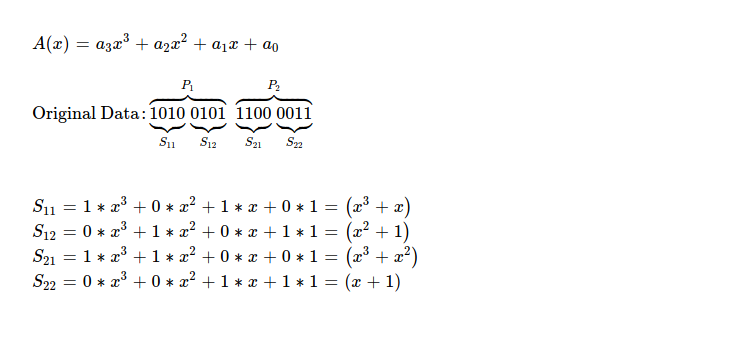
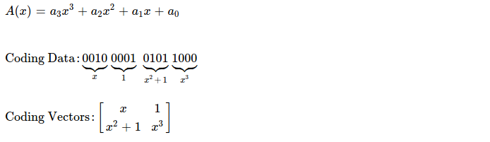
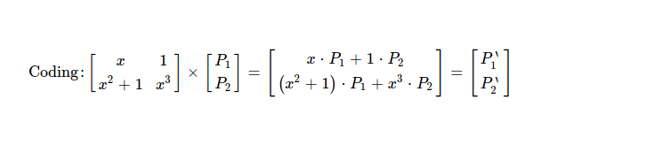
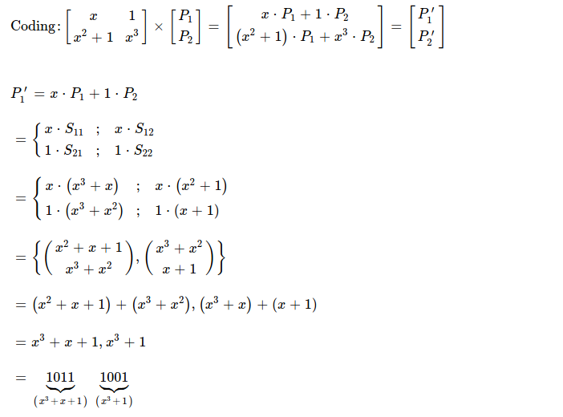
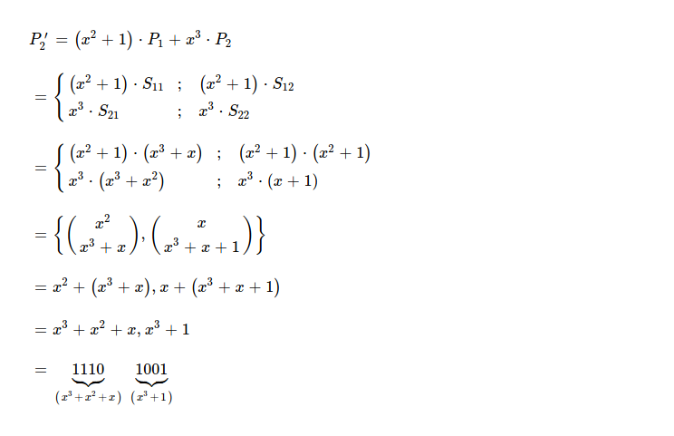
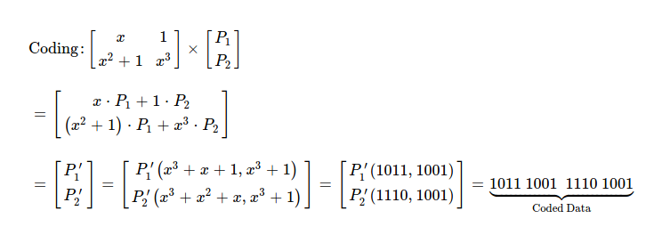

After exploring applications, benefits & disadvantages of Random Linear Network Coding,
I've decided to dig deeper into theory. Today I'll attempt to manually code a chunk of data & finally recover
back original data from coded one, using RLNC.
I've taken 0xa5c3 = 0b1010_0101_1100_0011 as 16-bit original
data chunk, which I'm splitting into N( = 2 ) equal sized pieces i.e. {0xa5, 0xc3}.
I define each symbol to be 4-bits i.e. 1 nibble. M-many symbols together make up ( read when concatenated ) one piece. Each piece
has exactly M-many symbols. In total, M * N -many symbols in data chunk.
For performing coding, I interpret each nibble as element of some Galois Field. I choose to use GF(2 ^ 4) as the extension field of prime field GF(2). In extension field GF(2 ^ 4), there're 16 possible elements, each generated following
| Binary | Polynomial |
|---|---|
| 0000 | 0 |
| 0001 | 1 |
| 0010 | x |
| 0011 | x+1 |
| 0100 | x2 |
| ... | ... |
I use x^4 + x + 1 as irreducible polynomial for field operations. When I add/ substract two elements ( read polynomials ) of GF(2 ^ 4), resulting polynomial's degree can't be > 3. But result of multiplication can increase polynomial degree > (m - 1), hence element doesn't belong to GF(2 ^ m) anymore. For bringing it back to GF(2 ^ m), I choose to modulo reduce it with irreducible polynomial for GF(2 ^ 4).
Irreducible polynomials behave like prime numbers, having only 1 & self as factors.
Inverse of polynomial in GF(2 ^ m) is defined as
That's why inverse of x^3 + 1 is x --- (x * (x^3 + 1)) mod (x^4 + x + 1) = 1
Now I prepare symbols ( read nibbles ) as elements of GF(2 ^ 4).
I'll now create two coding vectors, each having two randomly dragged GF(2 ^ 4) elements, because I've N( = 2 ) pieces, each piece having M( = 2 ) symbols. I arrange those two coding vectors as M x N matrix & perform coding by multiplying random coefficients with original pieces.
Essence of coding is just performing following matrix multiplication. Obtained P'1 & P'2 is what's sent over wire, along with coding matrix.
For finding out P'1, I perform polynomial multiplication in GF(2 ^ 4) & obtain one coded piece 0b1011_1001. One point to note in coded piece construction is how symbols from different pieces are added together.
Similarly I construct other coded piece P'2, as result I get 0b1110_1001.
I've constructed both coded pieces as 0b1011_1001_1110_1001, which I'm going to send over wire along with coding matrix.
